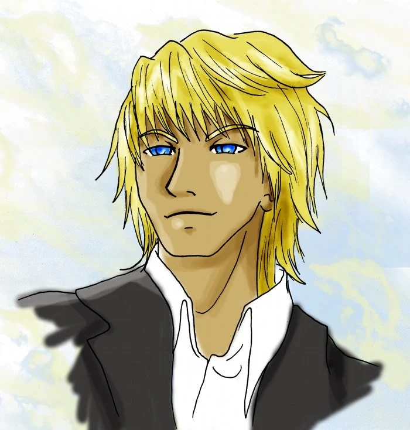
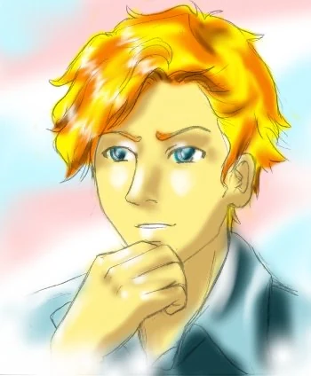
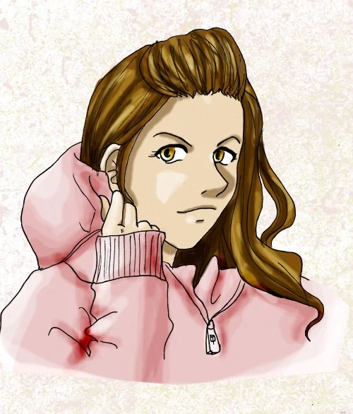
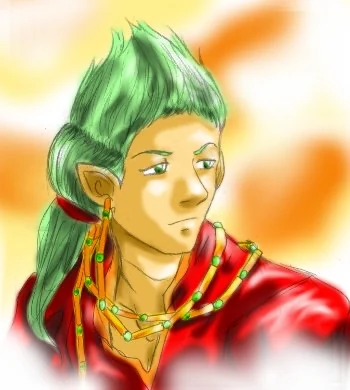
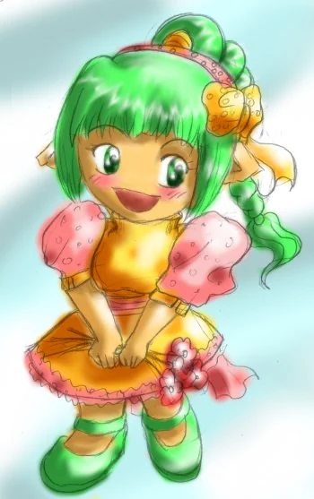

Les Humains

Le terme "Humain" est le nom générique pour désigner les personnes venant du monde réel et qui n'ont aucun lien avec Elenda et les contes.
Les Elendais

Les "Elendais" sont les habitants du Monde d'Elenda.
Ils ressemblent physiquement aux humains mais leur essence est différente puisqu'ils vivent dans les Brumes Éternelles du Monde des Contes
Les Sang-mêlés

Les Sang-Mêlés sont les personnes dont un des parents est issu de la réalité et l'autre d'Elenda.
De ce fait, leur essence est mêlée et ils peuvent interagir dans les deux mondes. Ils sont reconnaissable grâce à leurs yeux dorés.
Les Vampdragons

Les "Vampdragons" sont les habitants du Monde d'Elenda.
Ils ont de petites oreilles pointues. Ils donnent une grande importance à la famille et aux ancêtres. Ils portent tous une boucle d'oreille dont la longeur dépend de la longeure de leure lignée familliale. Les familles les plus prestigieuses et anciennes sont celles à la boucle d'oreille la plus longue.
Les Nelfes

Les "Nelfes" sont des habitants du Monde d'Elenda.
Les Nelfes sont des habitants d'Elenda très reconnaissable de part leur apparence physique. Ils ont de petites oreilles pointues, des ailes qu'ils peuvent choisir de faire apparaître ou non et surtout une petite taille qui est, elle aussi, changeable à souhait.